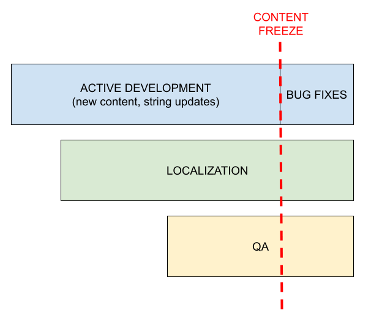

Globalization best practices for product managers
This document aims to describe a few of the common pitfalls when it comes to localizing products or websites, and it targets a less technical audience than Localization best practices for developers.
The following content is also accessible to Mozilla staff (not public):
- For more detailed information about how we currently ship localized products, you can check out this Mana page.
- To understand how different content types are translated at Mozilla, you can check the main Localization page on Mana.
Planning
Localization can’t be an afterthought
If you plan to ship a product in more than one language, localization should be part of the initial planning. In some cases, adding localization late in the cycle might be costly, as it could require going back to the drawing board for UX or content, or setting up additional infrastructure to ship a localized version of the product.
There are areas that represent non-obvious challenges when it comes to localization (physical addresses, phone number parsing and formatting, currency selection to name a few). If your application touches one of these aspects, the amount of work might not be trivial, and it will be too late to fix things.
Which content needs to be localized?
Try to think of all the assets that will be created as part of the product, and how many will require localization. For example, shipping a localized mobile app isn’t just about localizing the app itself:
- Marketing content: is there promotional material that needs to be localized as part of launch or major update?
- Legal docs: are there new legal documents, or updates to existing ones, required for this project?
- App Store listings: is the project going to be published in online stores (Apple, Google, Microsoft)? Text requires localization, and images might need to be localized.
Stores are becoming common also for Desktop apps, so this applies to more and more products.
If you create imagery as part of these assets, make sure that they’re either fully localizable, or they’re sufficiently abstract (no text, no parts of actual product UI with text). Also, be mindful when adding pictures of people, make sure that the selection is inclusive and fits the target audience.
Account for localization in your schedule
There are a few key moments in the schedule for a localized product:
- Active development: localization can start during this phase, and work in parallel with development (continuous localization). At this point, Nightly builds or automated screenshots should be already available to test localization in-context. While some churn in content can be expected at this stage, developers should still try to avoid landing temporary content or placeholders.
- Content freeze: even with continuous localization, there must be a moment in the cycle when the content gets frozen, and stops receiving updates. This time after content freeze can be dedicated to complete and test localization.
- QA: Does QA need to test localized versions of the product? If so, this could only happen after the product has been localized.
The time needed to complete localization will depend on the size of content. When working with volunteers, it’s also important to understand that there’s no guarantee that localization will be completed by the end of the cycle:
- The localization implementation should be able to gracefully deal with incomplete localizations, i.e. implement a robust fallback system. For example, if a translation is missing for French, the app should keep working and display English content (i.e. the “source” content) only for that specific string.
Ideally, there should be a full chain of fallback locales, instead of just a pair: for example, for a minority language spoken in Mexico, a fallback chain that looks like language -> es-MX -> es-ES -> en-US provides a much better experience for users. - Being able to quickly ship localization updates after the initial release is a major benefit, both for increasing localization coverage and fixing bugs.

New feature ≠ new product
If a product is already localized, the new feature will inherit the same infrastructure, processes, and limitations of the main product (check this internal Mana page for more details on some of Mozilla products).
For example, if you’re adding a new feature in Firefox:
- It will be localized by volunteers.
- Strings will be automatically exposed for localization once they land in Nightly.
- It will follow the rapid release cycle, with content frozen once it moves to Beta.
While possible, supporting a completely different workflow for a single feature requires time and work, and might not be cost or resource effective.
Setting up for success
Provide context
It doesn’t really matter if translation is performed by volunteers or by an external agency: without context, they don’t have the tools to succeed.
Providing context means, for example, explaining why a specific wording or term was chosen. What was the original intent? That reasoning would help localizers come up with the best option.
On a more technical level, providing context means explaining:
- Where is the string used, and are there technical limitations (e.g. limited space)? This typically happens through localization comments.
- How can a feature be tested, or how can localized text be verified in context? Screenshots generated as part of automated tests go a long way in helping with this, as they don’t have any technical entry barrier, and require less time for localizers.
Localization and volunteers are rarely the bottleneck
Using an external agency might feel like a good choice to ensure translations are done in time, especially when other parts of the project are late.
There are a few negatives to keep in mind:
- Translation delivery might happen quickly, but the content needs to be fed back into the existing infrastructure. Does that infrastructure support an external vendor?
- The agency might not have sufficient context or experience with the Mozilla ecosystem, and their work might not fit into the existing translations — or even our values.
- Fixing errors in translations might take a longer time to resolve, as the issue needs to be reported back in external tools, verified by translators, and then the fix imported back in the product.
Working in the open by default
As mentioned above, localizers need context. This context is provided through open communications, while translations will be stored in tools and repositories that are publicly visible.
If the intent is to make a marketing splash with a new feature, keep this aspect in mind. There are ways to mitigate this, hiding some part of the information (e.g. launch dates) or sending 1:1 communications, but it can’t be a completely opaque process.
Region ≠ language
It’s a common mistake to think of languages and regions as interchangeable (France = French). The easiest way to understand why that doesn’t work is thinking about a language like Spanish:
- It’s certainly spoken in Spain, but it’s the official language of several countries in South and Central America, and widely spoken in others (e.g. in the United States). Every regional variant will have different internationalization preferences (e.g. currency, or date formatting), but they might also use different expressions that could sound awkward to another demographic.
- By focusing only on Spanish for a product launch in Spain, you might be providing a less enjoyable experience for other users in the same region (Catalan, French, and speakers of other minority languages). This concept applies to most larger countries.
If you’re interested in knowing more about this topic, for example language distribution in a specific country, data from external research is available.
Feature and brand names
Feature names are a particularly challenging aspect of localization, as often they use (or allude to) actual meaningful words in English.
The most important thing to establish early is a clear policy for translation: can the feature name be translated or transliterated, completely or partially, or should it stay in English?
Changing a feature name afterwards is confusing for users, so it’s important to establish a clear policy from the start, and understand that we shouldn’t change it afterwards. Imagine, as a user, to find a new feature in Firefox, and that name changes a couple of versions later. Confusing, isn't it? That happened for Firefox Account and Sync in the past, because we failed to satisfy the first requirement (or changed policy after years).
If the feature name can be localized, we need to provide as much context as possible on the choice, i.e. why that specific name was chosen for English.
We also need to give time to localizers to come up with a good choice. After all, the same process likely required a significant amount of time for English.